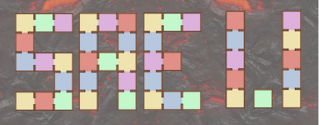

Administrer des Systèmes informatiques communicants complexes
Installer, configurer, mettre à disposition, maintenir en conditions opérationnelles des infrastructures,
des services et des réseaux et optimiser le système informatique d’une organisation.
Apprentissages Critiques
- Identifier les différents composants (matériels et logiciels) d’un système numérique
- Utiliser les fonctionnalités de base d’un système multitâches / multiutilisateurs
- Installer et configurer un système d’exploitation et des outils de développement
- Configurer un poste de travail dans un réseau d’entreprise
Composantes Essentielles
- En maîtrisant l’architecture des systèmes et des réseaux
- En sécurisant le système d’information
- En appliquant les obligations légales , les normes en vigueur et les bonnes pratiques
- En mettant en œuvre les mesures correctives adaptées à la nature des incidents identifiés
- En respectant les contraintes de performances, de coûts et d’efficacité énergétique
- En assurant la pérennité des données et des logiciels
Projet associées
| Projet |
1 |
2 |
3 |
4 |
5 |

|
X |
X |
X |
|
|
|

|
|
|
|
X |
X |